TTHinting
Font hinting (also known as instructing) is the use of mathematical instructions to adjust the display of an outline font so that it lines up with a rasterized grid. At low screen resolutions, hinting is critical for producing clear, legible text. It can be accompanied by antialiasing and (on liquid crystal displays) subpixel rendering for further clarity.
For the purpose of on-screen text display, font hinting designates which primary pixels are interpolated to more clearly render a font.
Hints are usually created in a font editor during the typeface design process and embedded in the font. A font can be hinted either automatically (through processed algorithms based on the character outlines) or set manually. Most font editors are able to do automatic hinting, and this approach is suitable for many fonts. However, high-quality commercial fonts are often manually hinted to provide the sharpest appearance on computer displays. Verdana is one example of a font that contains a large amount of hinting data, much of which was accomplished manually by type engineer Tom Rickner.

TTHinting
·"Georgia & Verdana — Typefaces designed for the screen (finally)". Daniel Will-Harris. 2003. Retrieved 2010-05-24.
·"FREETYPE & PATENTS". the FreeType Project. 2009-06-09. Retrieved 2010-01-28.
·https://developer.apple.com/fonts/TTRefMan/RM03/Chap3.html#features TrueType Reference Manual